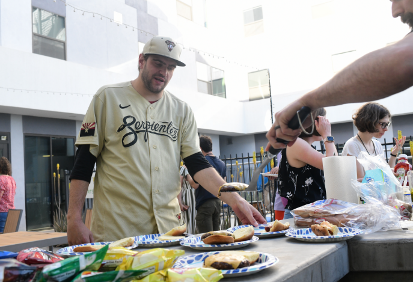

Engagement
in action

Solutions
in action

Transparency
in action

Journalism
in action
Housing shortages. Rising living costs. Dwindling resources. Increased demand. Homelessness has been on the rise for years in Maricopa County. In January 2022, the annual point-in-time unsheltered street count reported 3,100 people — an increase of more than 50% since 2019.
Community Engagement Reporting journalism students sought out community members facing housing insecurity. These are their stories, their challenges and their solutions.

We Care
Autriya Moneshni
Housing resources: expectations become barriers
Miguel Torres

Faces of Paz
Olivia Munson